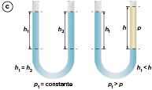
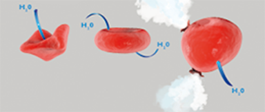

O etilenoglicol é utilizado como aditivo em sistemas de arrefecimento de automóveis, aumentando a temperatura de ebulição da água e diminuindo a temperatura de congelamento, além de evitar a corrosão do sistema.
SiNeeKan/Shutterstock.com
Sistema de arrefecimento
O que é? Para que serve?
O sistema de arrefecimento é responsável por manter o carro a uma temperatura ideal de funcionamento – sempre na faixa dos 90
°
Celsius. [...] O sistema é composto por mangueiras, radiador, ventoinha, bomba d’água, vaso de expansão, válvula termostática e, no meio de tudo isso, um líquido, que deve ser composto 50% por água desmineralizada e 50% por aditivo a base de etilenoglicol.
[...]
Como funciona?
O líquido percorre a parte interna do motor, sem entrar em contato com seus componentes de combustão, até chegar ao radiador. Por lá, a mistura, que ficou quente, transfere o seu calor para o ar. Toda essa movimentação é feita
através de mangueiras e quem controla esse fluxo é a válvula termostática: ela bloqueia a “água” quando o motor esfria e libera quando o motor ultrapassa determinada temperatura. Quem coloca o líquido em movimento
pelo sistema é a bomba d’água. Quando o carro está desligado, todo o líquido fica alojado no vaso de expansão (que é a peça plástica que você usa para checar se o nível do líquido está correto). A ventoinha também ajuda
a retirar o calor do motor, direcionando ar para dentro do motor exatamente como um ventilador.
[...]
FERREIRA, Michelle. “Autoajuda: sistema de arrefecimento”.
Revista Autoesporte , 1° maio 2015. Disponível em: <https://autoesporte.globo.com/carros/colunistas/post-coluna/2015/05/autoajuda-sistema-de-arrefecimento.ghtml>. Acesso em: 3 ago. 2021.
Por que, em países que enfrentam invernos rigorosos, é comum jogar sal de cozinha na neve que se deposita sobre calçadas e estradas?
Você já deve ter provado algum doce em compota de frutas, como laranja, abóbora e figo. Nesses doces, a fruta costuma ter durailidade muito maior. Que propriedade coligativa explica esse processo?
Neste capítulo serão abordadas as habilidades
EM13CNT301
,
EM13CNT302
e
EM13CNT306
.
Tonoscopia
A
tonoscopia (ou
tonometria )
é uma propriedade coligativa na qual observamos o abaixamento da pressão máxima de vapor de um líquido pela dissolução de um soluto não volátil, devido à queda da taxa de evaporação do solvente.
Observe as imagens a seguir para analisarmos o efeito da tonoscopia:
As moléculas de solvente estão representadas pelas esferas azuis, e as moléculas do soluto, pelas esferas laranjas.
No primeiro béquer, observamos que o solvente evapora conforme sua temperatura de ebulição é atingida, o que está representado na imagem pelas setas pretas.
Um líquido entra em
ebulição quando a pressão máxima de seu vapor (
Pvapor ) se iguala à pressão externa (pressão atmosférica local).
No segundo béquer, ocorreu adição de um soluto não volátil ao solvente, dificultando a sua evaporação, o que é representado pelo número menor de setas na segunda imagem.
No terceiro béquer, adicionou-se mais soluto (observe o aumento do número de bolinhas laranjas), deixando a solução mais concentrada e dificultando ainda mais a evaporação, novamente indicada pela redução no número de setas. Quanto
maior a concentração do soluto, maior será o efeito coligativo causado e menor será a pressão de vapor da água.
Esse fenômeno ocorre porque, em uma substância pura no estado líquido, a sua superfície apresenta apenas partículas dessa substância, e, com isso, a probailidade de escape dessas partículas para a fase gasosa é a mesma em toda
a superfície. No entanto, ao se adicionar um soluto não volátil a esse líquido, a solução passa a ter partículas do soluto na superfície, o que diminui a probailidade de escape de partículas do solvente para a fase gasosa e
reduz a pressão de vapor do solvente.
A
tonoscopia avalia a mudança da pressão de vapor de um solvente e de suas soluções a uma temperatura constante, enquanto a
ebulioscopia avalia a mudança da temperatura de ebulição de um solvente e de suas soluções a uma pressão de vapor constante.
Diminuição da pressão de vapor do solvente puro (
P0 ) com a adição de um soluto não volátil (
P ).
A tonoscopia pode ser observada quando adicionamos um soluto como o sal cloreto de sódio (NaC
ℓ
) na água. Com essa adição, a pressão máxima de vapor da água na solução passa a ser inferior à pressão máxima de vapor da água pura. As partículas de soluto dificultam o escape das moléculas de água do sistema, diminuindo o número de moléculas que passam
para o estado gasoso em dado intervalo de tempo, reduzindo a pressão de vapor da água no recipiente.
Ebulioscopia
A
ebulioscopia (ou
ebuliometria ) é uma propriedade coligativa, na qual observamos a elevação da temperatura de ebulição de um líquido por meio da adição de um soluto não volátil. A presença do soluto torna o solvente menos volátil, como
se o soluto “atrapalhasse” a ebulição do solvente.
Aumento da temperatura de ebulição do solvente puro (
P0 ) com a adição de um soluto não volátil (
P ).
Observando o gráfico, é possível concluir que, em determinada temperatura, a pressão de vapor do solvente em uma solução com soluto não volátil é menor que a pressão de vapor do solvente puro. Esse fenômeno ocorre, porque a energia
necessária para evaporar o solvente é maior na solução, uma vez que as partículas de soluto reduzem a probailidade de escape, ou seja, a evaporação das partículas de solvente.
Crioscopia
A
crioscopia (ou
criometria ) é uma propriedade coligativa na qual observamos o abaixamento da temperatura de congelamento de um líquido por meio da adição de um soluto não volátil.
No gráfico abaixo, que representa o diagrama de fases da água, podemos observar que a curva referente à solução encontra-se abaixo do solvente puro.
Discussão em sala
Em janeiro de 2020, diversas reportagens foram feitas a respeito de um lote de cervejas de uma fábrica de Belo Horizonte após alguns casos de contaminação e, até mesmo, de morte de pessoas após sua ingestão.
É comum a utilização de um líquido viscoso, que passa por uma serpentina, dentro ou fora dos tonéis de cerveja, para resfriar a beida. O procedimento não faz com que a beida congele, e esse líquido não entra em contato
com a cerveja no processo de resfriamento. Utiliza-se o etilenoglicol (ou monoetilenoglicol, de fórmula HO
–
CH
2–
CH
2–
OH, cuja nomenclatura, segundo a IUPAC, é etano-1,2-diol) nesse processo de resfriamento. Resultados de análises também indicaram a presença de dietilenoglicol (de fórmula estrutural
HO
–
CH
2–
CH
2–
OCH
2–
CH
2–
OH
e nomenclatura, segundo a IUPAC, 2,2’-oxiisetan-1-ol) na cerveja, uma substância não utilizada em processos de resfriamento envolvendo alimentos. Ambos contêm o grupo etileno (
–
CH
2–
CH
2–
), porém, no dietilenoglicol, ele ocorre duas vezes.
Pesquise e traga suas anotações para discutir em sala:
Por que é necessária a adição de um anticongelante no processo? Para os seres humanos, quais são as principais consequências da ingestão dessas substâncias?
Osmometria
Para o entendimento da osmometria, primeiramente vamos definir o conceito de
osmose : passagem de
solvente do
meio menos concentrado (
hipotônico )
para o
meio mais concentrado (
hipertônico )
através de uma
membrana semipermeável .
O meio hipotônico pode ser uma solução mais diluída ou apenas água. Haverá uma diminuição de volume nesse meio e um aumento de volume no meio hipertônico.
As membranas semipermeáveis recebem esse nome porque apresentam ação seletiva quanto ao tipo de substância que pode atravessá-las. Elas podem ser compostas de tecidos artificiais, como papel celofane e pergaminho, ou de tecidos
orgânicos, como a membrana plasmática das células, a película do ovo de galinha, a bexiga urinária, entre outros.
Considere, como exemplo, o sistema abaixo, formado por soluções de água e sal e uma membrana semipermeável. Nele, há um movimento espontâneo mais acentuado de moléculas de água da esquerda para a direita até que as concentrações
das soluções se igualam.

Fenômeno da osmose: passagem de solvente do meio menos concentrado para o mais concentrado, sendo o meio menos concentrado (A) uma solução ou (B) apenas água. Observamos em (C) que os vasos têm a mesma altura quando a pressão está constante e, com a osmose,
há uma diminuição de
h1 , deixando
p1 >
p .
A capacidade que cada solvente apresenta de atravessar uma membrana semipermeável está relacionada à sua pressão de vapor. Dados experimentais mostram que, quanto maior a pressão de vapor do solvente, maior será sua tendência de
atravessar uma membrana semipermeável.
...a membrana plasmática das células é semipermeável, permitindo que ocorra osmose. Dessa forma, o soro fisiológico, utilizado em hospitais para aplicação intravenosa, deve ter concentração equivalente a uma solução
de 0,9% de cloreto de sódio, a mesma pressão osmótica que o sangue e as hemácias, ou seja, uma solução isotônica.
Qualquer desequilíbrio pode causar danos às hemácias: utilizando água destilada (meio hipotônico) ocorre grande entrada de água nas células, o que pode levar ao rompimento da membrana plasmática, processo conhecido
como “lise” celular, e à morte da hemácia. Ao se empregar uma solução saturada de cloreto de sódio (meio hipertônico), no entanto, ocorre diminuição de volume, retração da célula e, provavelmente,
a morte dela.

Esquema dos efeitos da osmose em hemácias.
Naeblys/Shutterstock.com
Questão resolvida
1
UFRGS Assinale a alternativa que preenche corretamente as lacunas do enunciado abaixo, na ordem em que aparecem.
Uma solução injetável foi preparada de modo inadequado, pois, ao entrar na corrente sanguínea, promoveu o inchamento e a ruptura dos glóbulos vermelhos. A solução é, portanto, __________ em relação ao soro sanguíneo, e a concentração
de soluto é __________ àquela que deveria ter sido preparada.
hipotônica – superior
hipotônica – inferior
isotônica – superior
hipertônica – superior
hipertônica – inferior
Resolução:
Alternativa B.
A solução hipotônica é menos concentrada e, consequentemente, sua pressão de vapor é maior.
Mais
Ciência Explica – "Por que os peixes de água salgada não sobrevivem em água doce?" ClickCiência UFSCar
Um peixe que vive em água doce pode viver normalmente em água salgada? Assista ao vídeo para conferir a resposta.
A pressão osmótica (
π
) é a pressão exercida sobre a solução mais concentrada para impedir que a osmose ocorra. Adapta-se um êmbolo ao vaso da solução para interromper a osmose.
Esquema geral do funcionamento da pressão osmótica.
A
osmometria estuda o aumento da pressão osmótica de um líquido, quando a ele é adicionado um soluto não volátil. Para calcular a pressão osmótica, utilizamos uma equação matemática proposta pelo químico neerlandês Jacobus
Henricus van’t Hoff (1852-1911):
Em que:
ɱ
: concentração em mol/L;
R : constante universal dos gases ideais;
T : temperatura (em K);
i : fator de Van’t Hoff ou fator de correção.
Segundo Van’t Hoff, a pressão osmótica, em soluções diluídas, é diretamente proporcional à concentração em mol/L da solução e à temperatura, assim como ocorre na equação dos gases perfeitos, proposta pelo engenheiro civil
e físico-químico francês Benoît-Pierre-Émile Clapeyron (1799-1864). Veja:
P ∙ V = n ∙ R ∙ T
Substituindo P por
π
, teremos
Experimento
Osmose
O experimento tem como objetivo compreender o processo de osmose e a importância da ingestão do soro caseiro em casos de diarreia.
Materiais
1 batata tipo inglesa;
1 recipiente plástico de 250 mL (caneca de plástico);
água destilada (vendida em farmácias);
1 rolo de filme de PVC;
1 copo plástico de café;
1 seringa hipodérmica esterilizada de 1 mL (vendida em farmácias);
1 colher de chá;
açúcar (cristal ou refinado);
1 haste flexível sem o algodão nas pontas;
corante alimentício vermelho.
Obs.: todos os materiais podem ser visualizados na figura a seguir.
Procedimento
Material necessário para o experimento de demonstração do processo de osmose.
Dotta2
Tome a seringa e corte a sua ponta, de tal modo que ela possa ser usada como um fura-rolhas.
Faça um orifício em uma batata do tipo inglesa com o auxílio da seringa (fura-rolhas). Tome o devido cuidado para não romper o tubérculo. O orifício formado deve ter uma profundidade adequada, isto é, a metade do comprimento
da haste flexível de plástico.
Corte uma tira do filme de PVC de aproximadamente 30 cm de comprimento e 3 cm de largura.
Pegue uma haste flexível, retire o algodão das pontas e envolva a parede central externa com o filme de PVC.
Dissolva em 30 mL de água, contidos em um copo plástico de café, uma colher de chá de açúcar (aproximadamente 3,5 g) e uma pequena quantidade do corante de alimento vermelho (aproximadamente 1,2 g). Transfira a solução
para o orifício feito na batata.
Tampe o orifício com a haste flexível revestida com o filme de PVC.
Coloque a batata em um copo contendo água de torneira (ou, preferencialmente, água destilada) e deixe em repouso de 3 a 6 h.
VIEIRA, Heberth J.; FIGUEIREDO-FILHO, Luiz C. S. de; FATIBELLO-FILHO, Orlando. “Um experimento simples e de baixo custo para compreender a osmose”. Química Nova na Escola. São Paulo, n. 26, p. 41-2, nov.
2007. Disponível em: <http://qnesc.sbq.org.br/online/qnesc26/v26a11.png>>. Acesso em: 3 ago. 2021. (Adapt.).
1
Como a ingestão de soro caseiro ajuda na contenção da diarreia?
2
O que podemos observar após a realização do experimento?
Fator de Van’t Hoff
Na equação proposta por Van’t Hoff, existe um fator de correção (representado por
i ) que deve ser levado em conta quando temos uma solução.
As propriedades coligativas dependem do número de partículas dispersas em solução .
Assim, para
soluções moleculares , sempre teremos uma única partícula dispersa (representada por
q ; logo
q = 1 ) em solução, uma vez que não formam íons (exceto os ácidos).
Observe, por exemplo, o comportamento de uma solução de glicose em água:
Já para
soluções iônicas , sempre teremos
q > 1 , pois ocorre dissociação iônica quando a substância entra em contato com a água.
Observe, por exemplo, o comportamento de soluções de cloreto de sódio e cloreto de bário em água:
Até agora, estamos considerando soluções que estão totalmente ionizadas, ou seja, que apresentam grau de ionização (
α
) igual a 100%. No entanto, sabemos que, na prática, elas nem sempre estarão 100% ionizadas, o que interfere no fator de Van’t Hoff.
Analisando a tabela, podemos concluir que, de cada 100 moléculas de H
2 SO
4 inicialmente utilizadas, 15 permanecem sem sofrer ionização, e 255 se ionizam, totalizando 270 partículas em solução aquosa, aumentando 2,7 vezes o efeito coligativo para essa solução, e não 3,0 vezes, como seria
previsto para uma solução com grau de ionização 100%.
Podemos generalizar uma fórmula para calcularmos o grau de ionização para moléculas que não estão 100% ionizadas. Admitindo uma molécula genérica como C
x A
y , teremos:
O fator de correção (
i ) de Van’t Hoff será:
i =
1
– α +
x
α +
y
a ~ i =
1
+ α
(
–
1
+
x
+
y) [1]
Para esse composto genérico, admitimos
q como:
Substituindo 2 em 1, teremos:
É possível comparar o efeito coligativo que duas ou mais soluções terão sobre um solvente analisando apenas o fator de correção de Van’t Hoff, desde que apresentem a mesma concentração em mol/L. Caso elas tenham concentrações diferentes, devemos
encontrar um critério de comparação (representado por
x ), que é obtido multiplicando-se o fator de correção de Van’t Hoff pela concentração em mol/L de cada solução. Veja:
Quanto maior o valor de
x , maior o efeito coligativo gerado, ou seja:
menor será a pressão de vapor da solução;
maior será a pressão osmótica da solução;
menor será a temperatura de congelamento da solução;
maior será a temperatura de ebulição da solução.
Lei de Raoult para as propriedades coligativas
O físico-químico francês François Marie Raoult (1830-1901) realizou diversos estudos relacionados às propriedades coligativas, criando leis representadas por equações matemáticas.
Para a
tonoscopia , Raoult afirma que
o abaixamento relativo da pressão máxima de vapor de um líquido é aproximadamente igual à fração molar do soluto (X1) .
Análise quantitativa do abaixamento da pressão máxima de vapor.
No gráfico, temos:
P0 : pressão máxima de vapor do solvente;
P : pressão máxima de vapor da solução;
Δ P=P0–P : abaixamento absoluto da pressão máxima de vapor;
(sendo a diferença sempre entre a maior e a menor pressão).
Pelo enunciado da Lei de Raoult, teremos:
Quando a solução é bem diluída, a quantidade de matéria do soluto (
n1 ) é pequena, e como
n =
n1 +
n2 , podemos reduzir a
n≌n2 . Assim:
Multiplicando o numerador e o denominador por 1 000 e fazendo o arranjo dos termos, teremos:
Na expressão, temos:
KT : constante tonoscópica;
W : molalidade, sendo
.
Logo:
Observe que a constante tonoscópica depende da natureza do solvente e independe do tipo de partícula (soluto) dissolvida. O mesmo ocorre com a ebulioscopia e a crioscopia.
Para a
ebulioscopia , teremos:
Análise quantitativa da variação da temperatura de ebulição.
Sendo:
Δ Te : aumento da temperatura de ebulição (sendo a diferença sempre entre a maior e a menor temperatura);
Ke : constante ebulioscópica;
W : molalidade;
i : fator de correção de Van’t Hoff.
Para a
crioscopia , teremos:
Análise quantitativa da variação da temperatura de congelamento.
Sendo:
Δ Tc : diminuição da temperatura de congelamento (sendo a diferença sempre entre a maior e a menor temperatura);
Kc : constante crioscópica;
W : molalidade;
i : fator de correção de Van’t Hoff.
Aplicando conhecimentos
1
Explique quais são as propriedades coligativas envolvidas no sistema de arrefecimento de automóveis com etilenoglicol.
2
Antigamente, uma prática comum para armazenar carnes era salgá-las. Explique o conceito envolvido e diga o nome da propriedade coligativa que explica a técnica utilizada.
3
Comparando três soluções, todas com a mesma concentração em mol/L, coloque-as em ordem crescente de temperatura de ebulição: C
12 H
22 O
11 , AgNO
3 e MgBr
2 .
4
Comparando as mesmas soluções do exercício anterior, porém com concentrações diferentes: 0,1 mol/L, 0,5 mol/L e 0,8 mol/L, a ordem crescente de temperatura de ebulição seria a mesma?
5
PUC-RS Tanto distúrios intestinais graves quanto a disputa em uma maratona podem levar a perdas importantes de água e eletrólitos pelo organismo. Considerando que essas situações exigem a reposição cuidadosa de substâncias,
um dos modos de fazê-lo é por meio da ingestão de soluções isotônicas. Essas soluções:
contêm concentração molar de cloreto de sódio igual àquela encontrada no sangue.
contêm massa de cloreto de sódio igual à massa de sacarose em dado volume.
têm solvente com capacidade igual à do sangue para passar por uma membrana semipermeável.
apresentam pressão osmótica igual à pressão atmosférica.
apresentam pressão osmótica igual à da água.
Consolidando saberes
1
UFRGS 2017 As figuras abaixo representam a variação da temperatura, em função do tempo, no resfriamento de água líquida e de uma solução aquosa de sal.
Considere as seguintes afirmações a respeito das figuras.
A curva da direita representa o sistema de água e sal.
T1=T2 .
T2 é inferior a 0
°
C.
Quais estão corretas?
Apenas I.
Apenas II.
Apenas III.
Apenas I e III.
I, II e III.
2
Unicamp-SP 2017 O etilenoglicol é uma substância muito solúvel em água, largamente utilizado como aditivo em radiadores de motores de automóveis, tanto em países frios como em países quentes. Considerando a função principal
de um radiador, pode-se inferir corretamente que:
a solidificação de uma solução aquosa de etilenoglicol deve começar a uma temperatura mais elevada que a da água pura, e sua ebulição, a uma temperatura mais baixa que a da água pura.
a solidificação de uma solução aquosa de etilenoglicol deve começar a uma temperatura mais baixa que a da água pura, e sua ebulição, a uma temperatura mais elevada que a da água pura.
tanto a solidificação de uma solução aquosa de etilenoglicol quanto a sua ebulição devem começar em temperaturas mais baixas que as da água pura.
tanto a solidificação de uma solução aquosa de etilenoglicol quanto a sua ebulição devem começar em temperaturas mais altas que as da água pura.
3
Unicamp-SP 2021 Em 2020, o Brasil foi impactado com a notícia de que muitas pessoas haviam se contaminado ao ingerir cerveja. Como se apurou mais tarde, a beida havia sido contaminada por dietilenoglicol. O fabricante
argumentou que havia comprado monoetilenoglicol, e que o dietilenoglicol chegou ao produto por contaminação ou por engano. A respeito desse episódio, pode-se afirmar que, se o dietilenoglicol, que estava dissolvido em água,
fosse utilizado no sistema de
resfriamento na linha de produção de cerveja, esse material poderia ser substituído por etanol, mas não por sal de cozinha.
aquecimento na linha de produção de cerveja, esse material poderia ser substituído por etanol.
resfriamento na linha de produção de cerveja, esse material poderia ser substituído por sal de cozinha.
aquecimento na linha de produção de cerveja, esse material poderia ser substituído por etanol, mas não por sal de cozinha.
4
Uece 2018 O propanotriol, presente em alimentos industrializados, é também usado como umectante, solvente e amaciante. Utilizando-se a constante ebulioscópica da água 0,512
°
C
∙
kg/mol é correto afirmar que o ponto de ebulição de 18,4 g de propanotriol dissolvidos em 500 g de água é, aproximadamente,
Dados: C
=
12; H
=
1; O
=
16.
100,14
°
C
100,20
°
C
100,60
°
C
100,79
°
C
5
Unesp 2018 A concentração de cloreto de sódio no soro fisiológico é 0,15 mol/L. Esse soro apresenta a mesma pressão osmótica que uma solução aquosa 0,15 mol/L de:
sacarose, C
12 H
22 O
11
sulfato de sódio, Na
2 SO
4
sulfato de alumínio, A
ℓ2 (SO
4 )
3
glicose, C
6 H
12 O
6
cloreto de potássio, KC
ℓ
6
Cefet-MG O Mar Morto corresponde a uma grande extensão de águas localizadas entre Israel e a Jordânia e apresenta alto teor salino, em torno de 300 g de sal por litro de água, inviailizando a vida marinha. Essa característica
é responsável pelo fato de suas propriedades serem distintas daquelas pertencentes à água pura, como, por exemplo,
maior pressão de vapor.
menor pressão osmótica.
maior temperatura de fusão.
menor condutiilidade elétrica.
maior temperatura de ebulição.
7
Uece 2016 O soro fisiológico e a lágrima são soluções de cloreto de sódio a 0,9% em água, sendo isotônicos em relação às hemácias e a outros líquidos do organismo. Considerando a densidade absoluta da solução 1 g/mL
a 27
°
C, a pressão osmótica do soro fisiológico será aproximadamente:
Dados: Na
=
23; Cl
=
35,5;
R
=
0,082 atm
∙
L
∙
mol
–1∙
K
–1
.
10,32 atm.
15,14 atm.
8,44 atm.
7,57 atm.
8
Uece 2017 O ponto de ebulição do etanol em determinadas condições é 78,22
°
C. Ao dissolver um pouco de fenol no etanol, um estudante de química produziu uma solução com ponto de ebulição 78,82
°
C, nas mesmas condições. Sabendo-se que o etanol tem
Ke=
1,2
°
C
∙
mol
∙
kg
–1
pode-se afirmar corretamente que a molalidade da solução é:
0,25 M
0,30 M
0,50 M
0,60 M
9
UFRGS 2019 A água é fundamental para a vida conhecida na Terra, de modo que a busca de planetas haitáveis ou com vida normalmente envolve, entre outros aspectos, a procura pela existência de água. Considere as afirmações
abaixo, a respeito da água na iosfera.
A água é decomposta em oxigênio e hidrogênio, através da respiração dos peixes.
A água do mar é inadequada ao consumo humano devido à sua alta pressão osmótica.
Águas quentes possuem maior quantidade dissolvida de gás carbônico.
Quais estão corretas?
Apenas I.
Apenas II.
Apenas III.
Apenas II e III.
I, II e III.
10
UFSC 2018 Em relação às proposições abaixo, é correto afirmar que:
01.
um alpinista no topo do Morro do Camirela precisará de mais energia para ferver a água contida em uma chaleira do que um turista que estiver nas areias da Praia de Jurerê, considerando-se volumes iguais de água.
02.
a água para cozimento do macarrão, se já estiver adicionada de sal de cozinha, entra em ebulição em uma temperatura maior do que a água pura.
04.
ao temperar com azeite de oliva uma salada com folhas úmidas pelo processo de lavagem, forma-se uma mistura homogênea entre a água retida na superfície das folhas e o azeite.
08.
a combustão de gasolina em um motor de automóvel é um fenômeno químico que representa uma reação exotérmica.
16.
o derretimento de uma barra de chocolate em um dia quente de verão é exemplo de uma transformação química.
32.
em um mesmo dia e sob as mesmas condições de temperatura e pressão amientes, a água potável de um reservatório aberto evapora a uma taxa maior do que a água do mar na Praia dos Ingleses.
64.
o odor característico do vinagre sentido ao se temperar uma salada é decorrente da transformação química sofrida pelas moléculas de ácido acético, que passam do estado líquido ao estado gasoso.
11
Udesc 2019 Um aluno de química encontrou 5 frascos na bancada do laboratório. Os frascos seriam utilizados em um experimento sobre propriedades coligativas e apresentam descrições de acordo com a tabela abaixo:
Analisando a descrição dos frascos, o aluno chegou à conclusão de que a ordem crescente de temperatura de congelamento das soluções é:
2
<
1
<
4
<
5
<
3
1
<
3
<
4
<
2
<
5
1
<
4
<
5
<
3
<
2
5
<
2
<
4
<
3
<
1
4
<
5
<
1
<
3
<
2
No enem é assim
As questões selecionadas nesta seção são prioritariamente do Enem, mas questões de vestibulares diversos que apresentam características semelhantes aos itens do referido exame também podem ser usadas como recurso para estudo.
1
Enem 2017 Na Idade Média, para elaborar preparados a partir de plantas produtoras de óleos essenciais, as coletas das espécies eram realizadas ao raiar do dia. Naquela época, essa prática era fundamentada misticamente
pelo efeito mágico dos raios lunares, que seria anulado pela emissão dos raios solares. Com a evolução da ciência, foi comprovado que a coleta de algumas espécies ao raiar do dia garante a obtenção de material com maiores
quantidades de óleos essenciais. A explicação científica que justifica essa prática se baseia na:
volatilização das substâncias de interesse.
polimerização dos óleos catalisada pela radiação solar.
soluilização das substâncias de interesse pelo orvalho.
oxidação do óleo pelo oxigênio produzido na fotossíntese.
liberação das moléculas de óleo durante o processo de fotossíntese.
2
Enem PPL 2018 Beidas podem ser refrigeradas de modo mais rápido utilizando-se caixas de isopor contendo gelo e um pouco de sal grosso comercial. Nesse processo ocorre o derretimento do gelo com consequente formação de
líquido e resfriamento das beidas. Uma interpretação equivocada, baseada no senso comum, relaciona esse efeito à grande capacidade do sal grosso de remover calor do gelo. Do ponto de vista científico, o resfriamento rápido
ocorre em razão da:
variação da soluilidade do sal.
alteração da polaridade da água.
elevação da densidade do líquido.
modificação da viscosidade do líquido.
diminuição da temperatura de fusão do líquido.
3
Enem PPL 2019 Em regiões desérticas, a obtenção de água potável não pode depender apenas da precipitação. Nesse sentido, portanto, sistemas para dessalinização da água do mar têm sido uma solução. Alguns desses sistemas
consistem basicamente de duas câmaras (uma contendo água doce e outra contendo água salgada) separadas por uma membrana semipermeável. Aplicando-se pressão na câmara com água salgada, a água pura é forçada a passar através
da membrana para a câmara contendo água doce. O processo descrito para a purificação da água é denominado
filtração.
adsorção.
destilação.
troca iônica.
osmose reversa.
4
Famerp-SP 2020 A tabela apresenta as pressões de vapor, à mesma temperatura, de três substâncias polares I, II e III.
Considerando as informações fornecidas, pode-se afirmar que
a substância II estará no estado gasoso à temperatura amiente.
a substância III apresentará menor pressão de vapor em maior altitude.
a substância I apresenta a maior intensidade de interações entre suas moléculas.
a substância I apresentará maior temperatura de ebulição se for adicionada a ela certa quantidade da substância II.
a substância III apresenta a maior temperatura de ebulição.
5
Enem 2017 Alguns tipos de dessalinizadores usam o processo de osmose reversa para obtenção de água potável a partir da água salgada. Nesse método, utiliza-se um recipiente contendo dois compartimentos separados por uma
membrana semipermeável: em um deles coloca-se água salgada e no outro recolhe-se a água potável. A aplicação de pressão mecânica no sistema faz a água fluir de um compartimento para o outro. O movimento das moléculas de
água através da membrana é controlado pela pressão osmótica e pela pressão mecânica aplicada. Para que ocorra esse processo é necessário que as resultantes das pressões osmótica e mecânica apresentem:
mesmo sentido e mesma intensidade.
sentidos opostos e mesma intensidade.
sentidos opostos e maior intensidade da pressão osmótica.
mesmo sentido e maior intensidade da pressão osmótica.
sentidos opostos e maior intensidade da pressão mecânica.